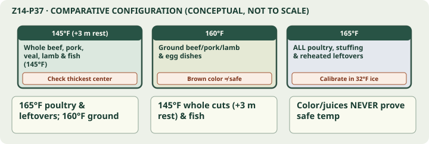

Z14-P37 · Food production and preservation · New manuscript
Verify safe minimum internal cooking temperatures with a calibrated thermometer
Destroy harmful foodborne pathogens reliably without relying on unreliable color, texture, or juice guesses.
When it applies · Home cooking, emergency meal preparation, and pre-heating meats prior to drying or storage.
Equipment · Calibrated instant-read digital or dial food thermometer and USDA safe-temperature chart.

Actions
- Use a food thermometer and the USDA chart. The minimum is 165°F for poultry and reheated leftovers or casseroles, 160°F for ground beef, pork, veal or lamb and egg dishes, and 145°F plus a three-minute rest for whole cuts of beef, pork, veal or lamb. Fish is a separate 145°F entry.[F11]
- Never judge safety by brown color or "clear juices"—ground beef can turn brown well below 160°F while E. coli survives inside, and smoked or cured poultry can stay pink even above 165°F.[F02]
- Check thermometer accuracy periodically in an ice-water slush bath (32°F) and clean the probe with hot soapy water between raw and cooked checks.[F02, F01]
Failure recognition · Serving hamburgers that look brown outside during a busy outage grill session while the center sits at 138°F.[F02]
Verify · Confirm thermometer calibrated cleanly, inserted into thickest center, and exact USDA temperature reached before serving.[F02]
Stop or change course · Undercooked meat or poultry must return immediately to heat until the thermometer confirms the full minimum safe temperature; wash plates that held raw meat before placing cooked food back.[F11, F02, F01]
Evidence and editorial notes
- F01 · USDA / FDA / CDC · Four Steps to Food Safety (current web edition)
- Section: Clean and Separate · Conditions: Food preparation with safe water and surfaces
Support: Wash hands and separate raw animal foods and juices from ready-to-eat food.
Limitations: Requires safe water or approved hand hygiene substitutes in outages. · Conflicting evidence: None; retained for food safety pack completeness.
Editorial note: Maintains five-pack integrity. · Specialist reviewer: Food safety and public health
Primary source · checked 2026-11-24 - F02 · USDA / FDA / CDC · Four Steps to Food Safety (current web edition)
- Section: Cook > Minimum internal temperature · Conditions: Food preparation with a working food thermometer
Support: Use food-specific safe internal temperatures; visual appearance alone cannot verify cooking.
Limitations: Thermometer calibration and probe placement affect readings. · Conflicting evidence: None; retained for food safety pack completeness.
Editorial note: Maintains five-pack integrity. · Specialist reviewer: Food safety and public health
Primary source · checked 2026-11-24 - F11 · USDA / FDA / CDC · Safe Minimum Internal Temperature Chart (Last reviewed 2024-11-21 (Internet Archive capture 2026-10-30; live page refused automated access))
- Section: Safe Minimum Internal Temperature Chart for Cooking · Conditions: Cooking raw meat, poultry, seafood, eggs, casseroles and leftovers
Support: Use a food thermometer. Beef, bison, veal, goat, lamb and pork steaks, roasts and chops: 145 degrees F with a 3-minute rest. Ground meats and egg dishes: 160 degrees F. Poultry, casseroles and leftovers: 165 degrees F. Fish: 145 degrees F or until the flesh is no longer translucent and separates easily with a fork.
Limitations: Live page refused automated access; rows read from the 2026-10-30 Internet Archive capture. · Conflicting evidence: Replaces F03 for temperatures on Z14-P37 (W2C-E036).
Editorial note: Added in W2C-B06. · Specialist reviewer: Food safety specialist
Primary source · checked 2026-11-28
Current assessment · W2C-E037 (2026-11-28) · Bounded primary support recorded: Grounds the three marks on the Z14-P37 thermometer column. Limits: The fish row also allows a visual doneness test; the plate scopes the colour-and-juices warning to meat.
Source lineage · USDA/FDA/CDC FoodSafety.gov; new manuscript · Classification · New manuscript.